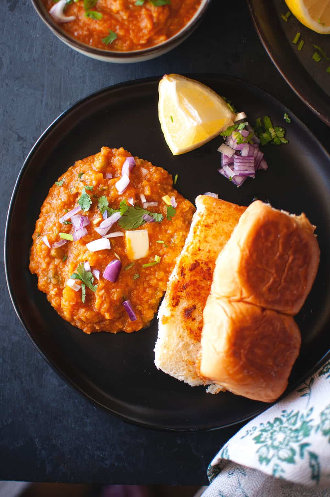

Pav Bhaji or Pao Bhaji(in Marathi) is a staple food of India, which consists of thick spicy vegetable curry which is called bhaji and is served with soft buttered bread roll called pav. It is served as a street snack or main dish. It originates from Mumbai, Maharashtra.
Ingredients needed
Directions
Dry roast coriander seeds, cumin seeds, driedd red chillies, cloves, fennel seeds, black cardamom and cinnamon stick in a pan on medium heat for few minutes until it becomes more fragrant. Quantity as much as you can handle the taste and not make it overpowering.
Boil and mash the mixed vegetables; finely chop onions, ginger, garlic, green chili, and tomatoes (using a food processor if preferred).
Heat butter and oil in a pot, sizzle cumin seeds, sauté onions until golden, then add ginger, garlic, and green chili; cook briefly.
Add chopped tomatoes, tomato puree, water, and salt. Cook covered until tomatoes are soft, then add pav bhaji masala, chili powders, kasuri methi, and optional sugar.
Add mashed veggies to the masala, mash more if needed, add water, and simmer covered on low heat for 15 minutes. Optionally blend for a smoother texture.
Stir in some butter, cilantro or coriander leaves and lemon juice. Simmer for some time and remove from heat.
Melt butter on a pan, sprinkle pav bhaji masala, and toast buns until golden and crisp on both sides.
Serve both of them together.
Thank You for the Recipe to Manali Singh on CookWithManali